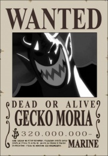

Gecko Moria
 De: La Frikipedia, la enciclopedia extremadamente seria.
De: La Frikipedia, la enciclopedia extremadamente seria.
| De la serie Luffy y su tripulación:
|
| Gecko Moria
|
|
|
| Orígen
|
Transilvania
|
| Tripulación
|
La suya, el es el jefe.
|
| Recompensa
|
320.000, retirada por necrofílico sichibukai.
|
| Fruta del diablo
|
Sombra sombra no mi
|
| Habilidad
|
Hablar con voz de pito y robar sombras.
|
| Malo o Bueno
|
Malísimo (dejó sin trabajo a millones de sepultureros...)
|
| Objetivo
|
Mirarse un día al espejo y NO gritar.
|
| Notas
|
KISISISISI...
|
 A contraluz da más miedo, luego es tan gordo y feo que da risa
Es un gigante que se cree vampiro (claramente no lo es), aunque realmente es un practicante de la necrofilia (de ahí el por qué de un ejercito de zombies). Se supone que antes era buena persona pero luego se comió la fruta de las sombras (que le permite robar las sombras de la gente, esto no le gusta a nadie, que a las sombras se les coge cariño) y fue corrompido por el lado Luther King de la Fuerza, los de la marina le nombraron Shichibukai despues de ponerle una recompensa de
unas trescientos veinte millones (320.000.000) de uvas (que ya es tela) así que el tío se montó una isla "barco" portaventuraenhalowen.
Tripulación
Su tripulación es lo único más raro que su risita:
- Absalon: un tigre, tiene el poder de volverse invisible (algo que utiliza para espiar a tías sin que se den cuenta). envidia (por robarle su sueño de el hacerce invisible y por cumplir su otro sueño, espiar a las tias siendo invisible).
- Pellona: una cría-fantasma adicta a las pelis de terror, tiene el podes de crear fantasmas parecidos a Casper que te quitan las ganas de vivir (si tienes, porque si la vida te importa un carajo no te hacen nada) Odia:
- las cucarachas
- la voz de su oso-mascota-esclavo
- a Ussop
- Dr hogback: es algo así como el dr Frankestein, aceptó unirse a Moria a cambio de que él resucitara a una tía buena la convirtiera en su esclava
sexual.
- Cindiri: la esclava del de la fila de arriba, antes (cuando respiraba) trabajaba de calientapollas en un cabaret, ahora es esclava y odia los platos (cosas más raras se han visto en esta serie, creo)
- Oz: es el espantoso resultado de la gran idea de Moria (digna de un borracho) de juntar el espiritu de un retrasado mental (Luffy) con el cuerpo de un demonio que ocupa lo que tres gigantes.
- Lola: un jabalí de color rosa que es más fea que su puta madre; quiere casarse con Absalon, él, por supuesto, la rechaza una y otra vez hasta que un día se le hincharon las pelotas y la pegó un bazokazo.
- El zombie de Brook, que a pesar de tener el espíritu de Brook es mucho más fuerte que él. Zoro lo mató para después soplarle su espada
- Una araña-mono-gigante con sordera que murió a los cinco minutos de su primera aparición.
- Y unos mil zombies que se van de botellón tras las media noche. Estos zombies no son como los de antaño (que comían cerebros, eran satánicos y actuaban con Michael Jackson), éstos son todos unos mandaos, se pueden ocultar enterrados en el suelo, en los cuadros y hasta en la sopa (no se ha dado el caso pero podría ocurrir), y encima de satánicos no tienen nada, uno hasta es cura.
Miscletánea
Tambien se deben destacar las ridículas risitas de la tripulación:
- Absalon no se ríe, ruge
- Pellona se ríe igual que un pavo (horohorohorohorohoro..)
- Holback parece que esté afónico cuando se ríe (posh posh posh posh...)
- Y Moria... kisisisi (indescriptible)
Autor(es):
- Celta
- Drakke148
- Genericool
- Elnutri
Frikipedia 2005-2016, Licencia
GFDL 1.2 - Extraído por FrikiLeaks